| 日付 | 2022年8月16日（火） |
|---|---|
| 山域 | 奥秩父 |
| メンバー | 家族（妻、長男・9歳） |
| 山行形態 | 子連れ日帰り |
| アクセス | 車 |
| ルート (Map) | 日向大谷 (8:53) - (9:33) 会所 - (11:05) 清滝小屋 - (11:58) 両神神社 - (12:28) 両神山 (13:17) - (14:09) 清滝小屋 - (15:38) 日向大谷 |
長野のキャンプを早々に切り上げたため、一週間程度予定が空く。
本日は雨が降らない予報になっていたため、山に行くことにする。
極力高い山に行きたいのだが、1都3県以外はあまり良い予報ではないため、
埼玉県の両神山に行くことにする。暑さは覚悟の上だ。
4度目の両神山だが、12年振りで久々の訪問だ。
日向大谷の駐車場に車を停める。標高650m。
この下にも駐車場はあるが、ここの駐車場は最後の1スペースだった。
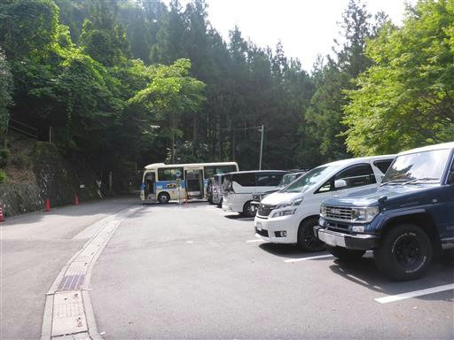
両神山荘の前から登山道が始まる。

立派な鳥居。この山は信仰の山で、神社や鳥居が多い。
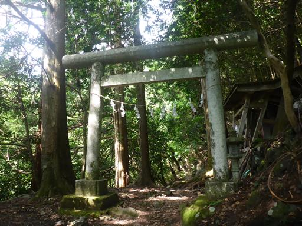
左側はかなりの急斜面。道はきれいに整備されているが、滑落すると危険だ。
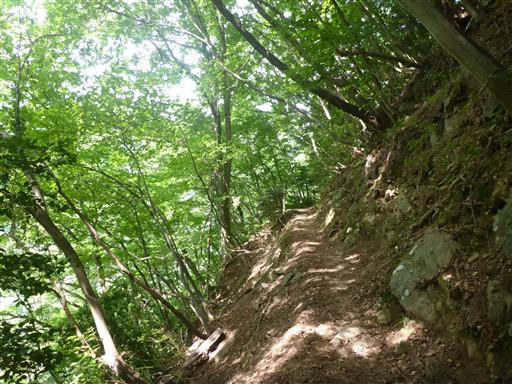
最初の鎖場。楽勝で通過。
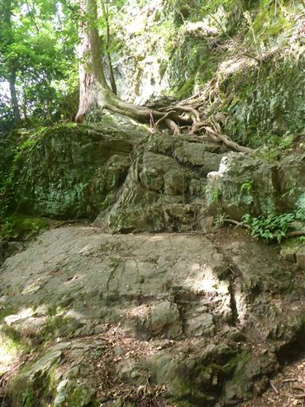
ところどころに巨大な杉が生えている。
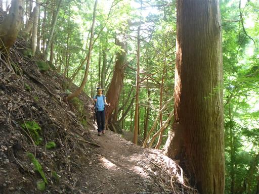
七滝沢コースの分岐点。2019年の台風19号以来閉鎖されているようだ。
整備されるまでは登らないように記載されているが、今後整備されることはなさそうだ。
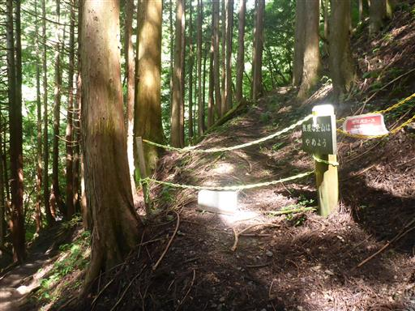
会所に到着。
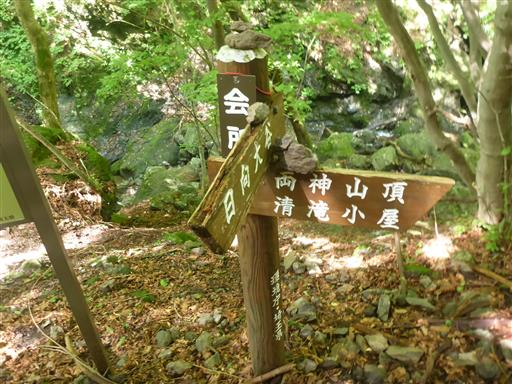
沢筋に下りてくる。
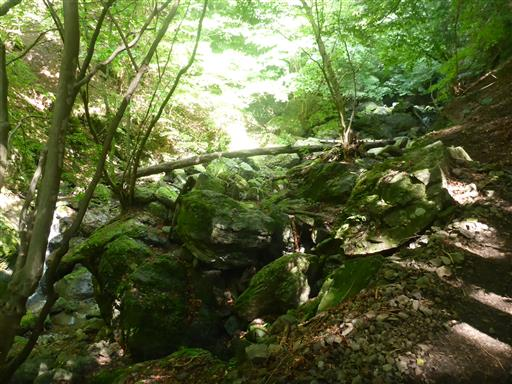
立派な木橋で沢を渡る。
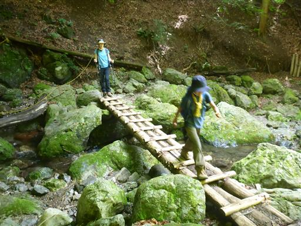
ヘビを発見。頭隠して尻隠さず。まだ子供のようだ。
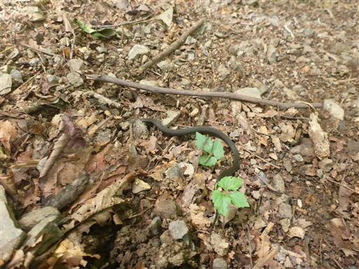
何度も沢を渡りながら登って行く。
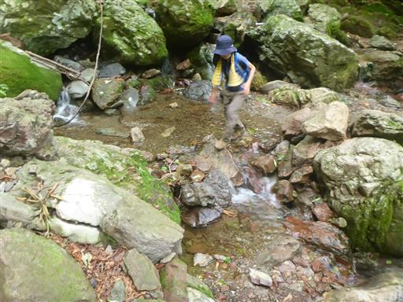
沢沿いの登山道が続く。決して涼しくはないが、暑すぎなくて助かる。
しかしハエの数がものすごく多く、うんざりする。
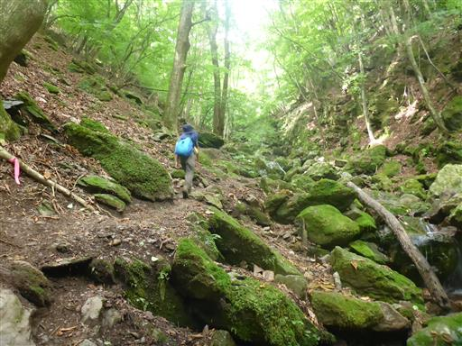
苔に覆われた岩。全体が緑に染まっている。
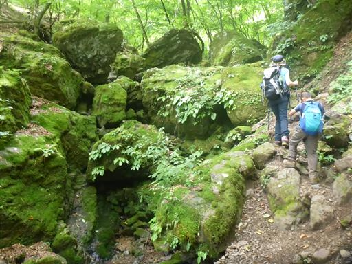
弘法の井戸に到着。冷たい水が流れている。
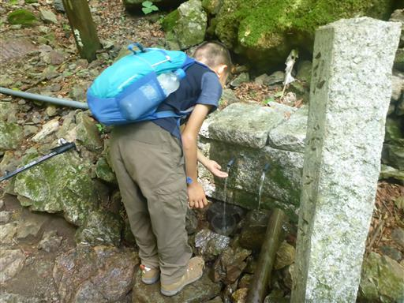
ものすごい木の根の階段。
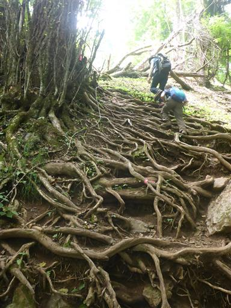
こちらは苔に覆われた倒木。
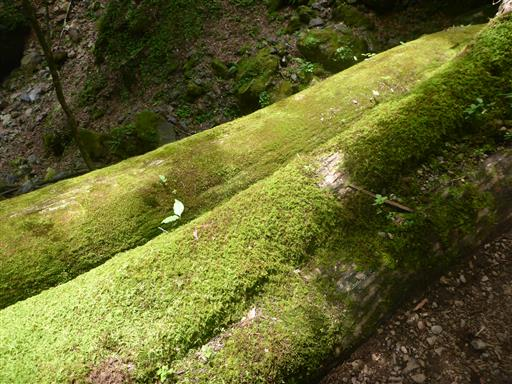
清滝小屋に到着する。営業を休止して久しい。今は避難小屋として開放されている。
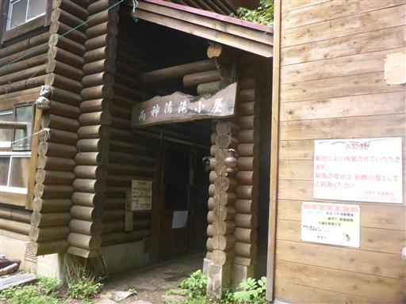
清滝小屋の名の由来になった清滝。水は枯れてしまっている。

立派な標識。
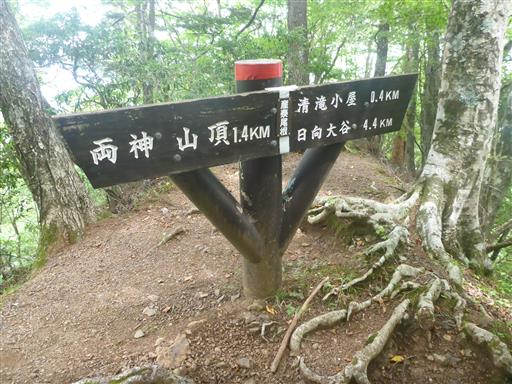
この辺りから、何度か鎖場が出てくる。いずれも難易度は低い。
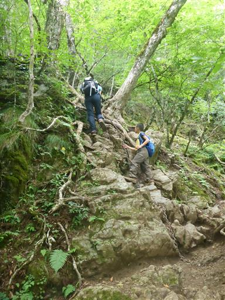
立派な階段。よく整備されている。
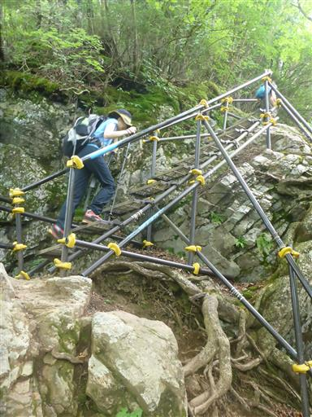
道が斜めになっていて歩きにくい。
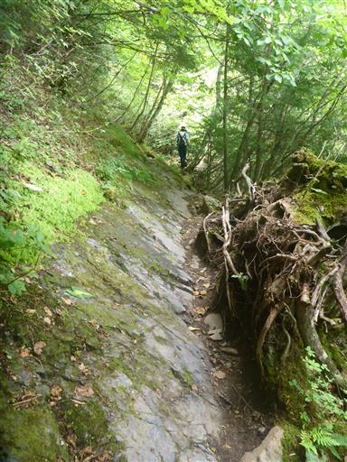
両神神社に到着。
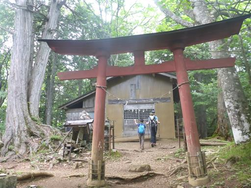
狼の狛犬が鎮座している。
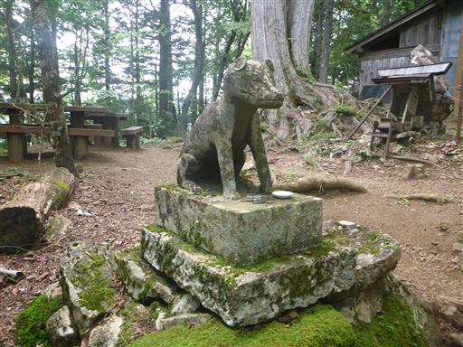
そのすぐ先に、もう1つ神社がある。こちらの狼の狛犬は大きめのサイズ。
10年前と変わらない風景だ。
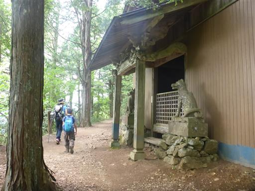
ところどころ、木の根の表面が黒く染まっている。
焦げているようにも見えるが、理由は不明だ。
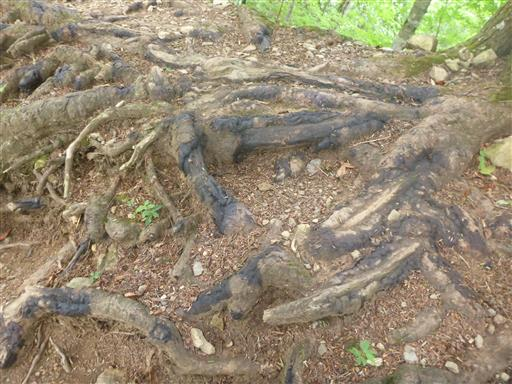
この辺りはタカネママコナが群生している。
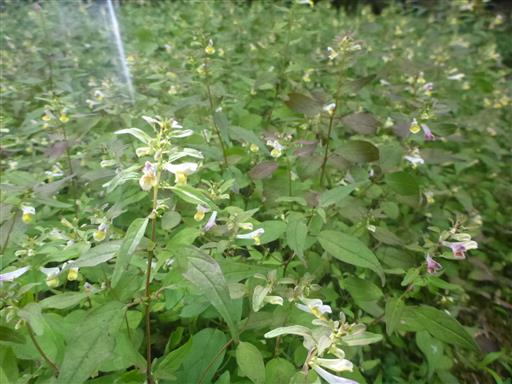
岩場を登る。
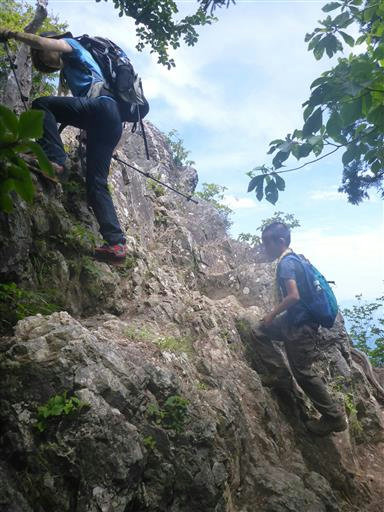
岩場を越えると展望が広がってくる。
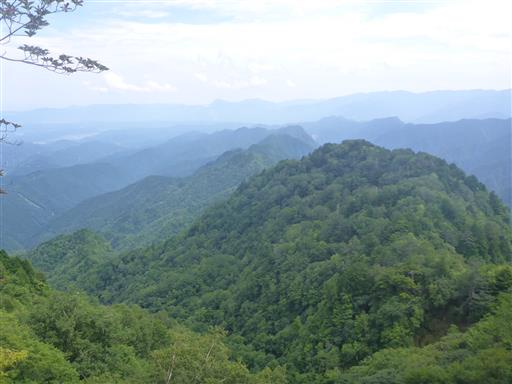
山頂直下の岩場。
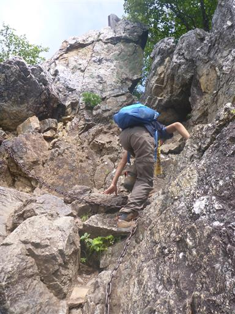
両神山山頂に到着。標高1723m。
岩の上に一本、確かアカヤシオの小さな木があったと思うのだが、残念ながらなくなっている。
紅葉や花を楽しませてくれていたのだが、枯れてしまったのだろうか？
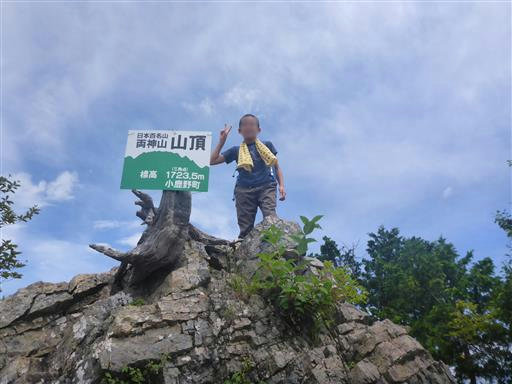
雲は多いが四囲の眺望を楽しめる。
こちらは奥秩父方面。一番高い場所は甲武信ヶ岳近辺だ。
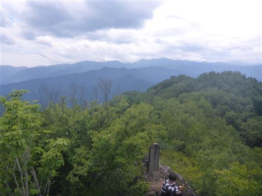
赤岩尾根方面。本当に山深く、周囲には山しか見えない。
ただ、近くに目を引く山は見当たらない。
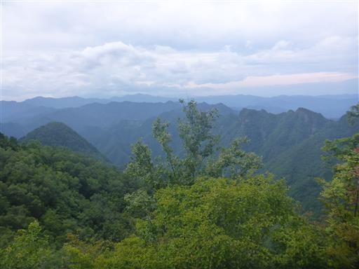
山頂はトンボの数が多い。
トンボのおかげか、山頂にハエはあまりいない。
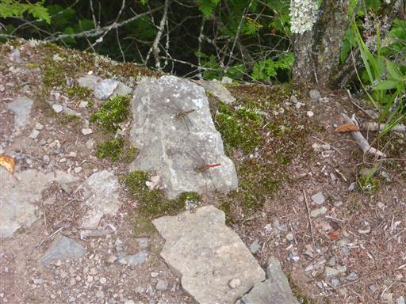
チョウもヒラヒラ飛んでいる。こちらはヒョウモンチョウ。
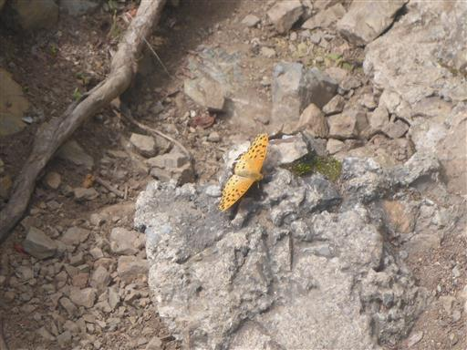
キアゲハ。
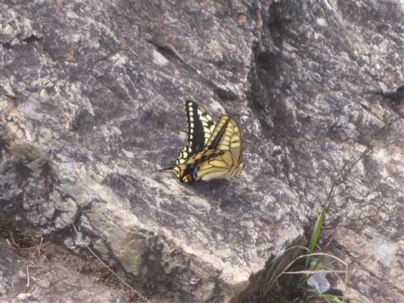
山頂で昼食を取ったら下山開始。いきなり岩場の下りだ。
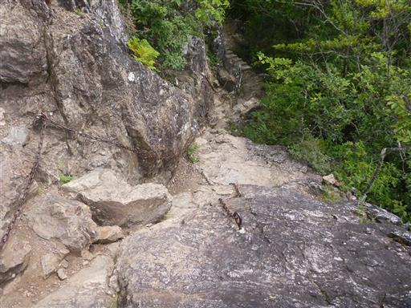
これは…キノコ？
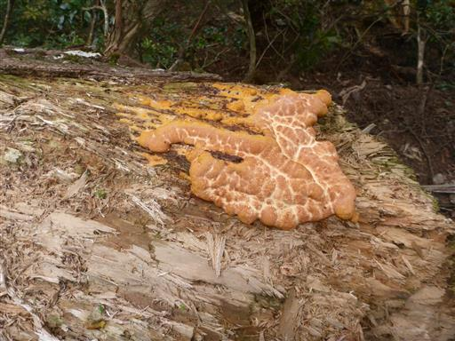
シモツケソウだろうか？
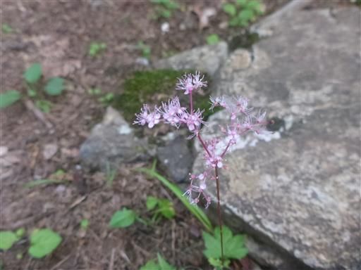
無事、両神山荘まで下ってくる。
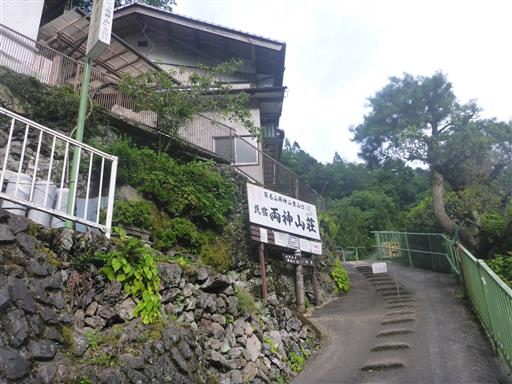
先に停まっていた駐車場の車は全てなくなっていて、初めてこの案内に気が付く。
無料と有料が併設されているが、一体どういうことだろう？
ここでも行政と民間での確執があるのだろうか…？
今回は初めて八丁尾根を歩かない両神山登山だったが、日向大谷からの往復だけでも
それなりに変化に富んだ登山道で、思った以上に良い山行だった。
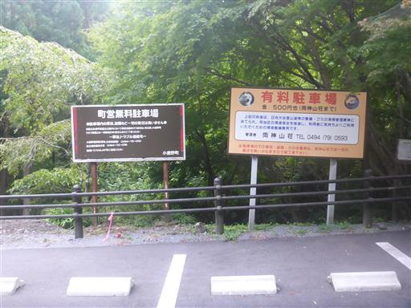